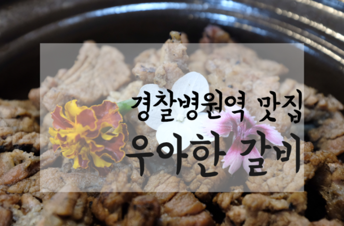

우아한갈비
가락동 고기집 경찰병원역 우아한갈비 생생정보 맛집

고기 구울필요없어요!
송파 가락동 고기집 경찰병원역 근처오면 꼭 생각나는 우아한갈비경찰병원역근처인데요.
여기 생생정보통출연도하셨네요 ㅎㅎ 대박.
재방문인데 처음하고는 좀 바뀌었어요. 구성이.
사장님이 젊은남자분이신데 엄청친절하시고 요리잘하시는듯.
자세한설명과 갈비집에서는 볼수없는 말그대로 우아한 맛집이었거든요.
고기를 구울필요없이 이쁘고 깔끔하게 레스토랑처럼 먹을수있는
우아한 매장이에요.
기본적인 세팅이랑 메뉴구성이 푸짐하고맛있어서 매운맛갈비
일반맛갈비 인원수에 맞게 주문하고 그때그때 조합에맞게 추가할
사이드메뉴가 있을때 추가를하면 되는 시스템인데요...... 자세한 내용 확인하기